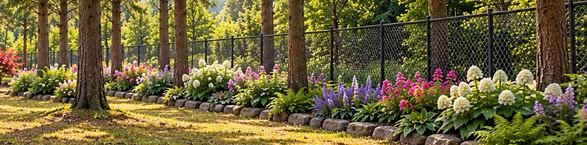
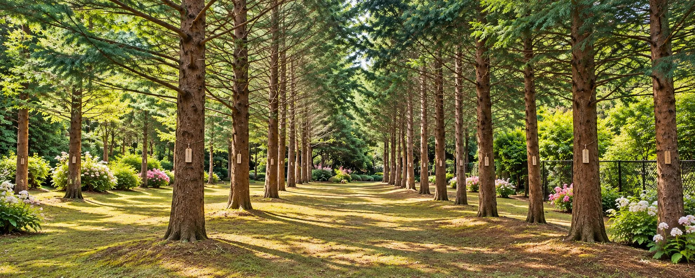
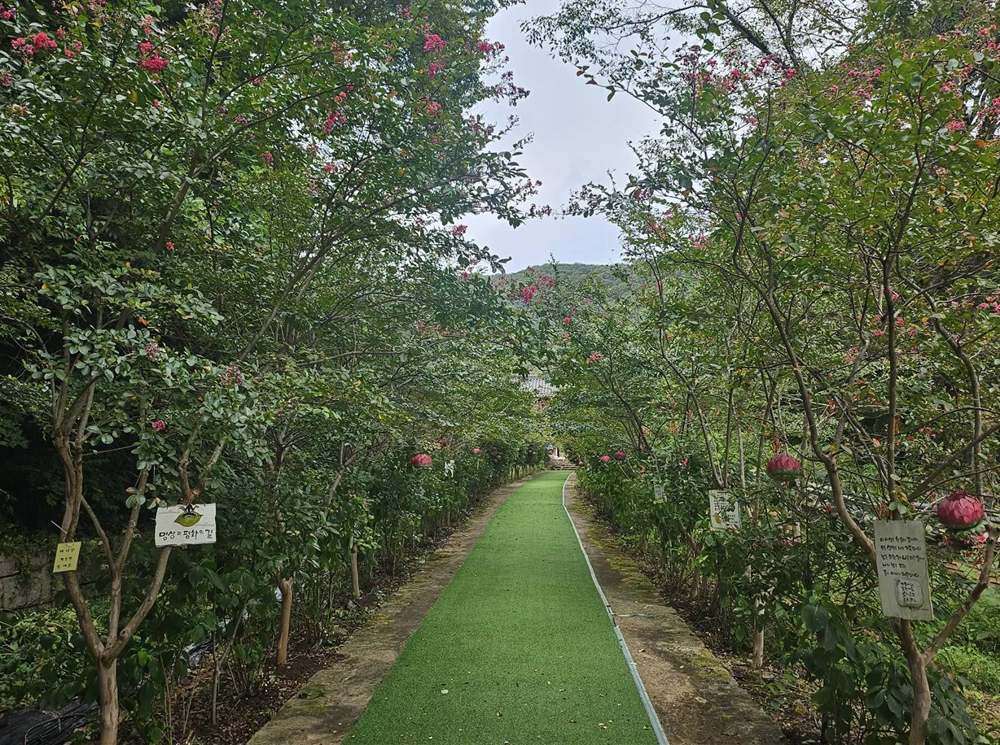

왕벚나무 4,000여 그루의 꽃길
1980년부터 한 그루씩 심은 왕벚나무 4,000여 그루가 5.5km 벚꽃 터널을 이룹니다. ‘한국의 아름다운 길 100선’에 선정되었고, 2004년 제5회 아름다운 숲 전국대회에서도 입상했습니다. 해마다 봄이면 보성벚꽃축제가 열립니다.
‘한국의 아름다운 길 100선’ 벚꽃 터널을 지나
천년고찰 대원사 곁에 닿는 꽃길숲 수목장

1,500년을 지켜 온
천봉산 대원사
503년 창건 · 보물 제1861호 극락전 벽화
천년고찰이 직접 운영하고 지킵니다

스님들이 잠든 터,
꽃으로 피어나는 숲
대원사 역대 스님들의 부도를 모셔 온 자리
사계절 꽃이 피는 포근한 숲으로 가꿔 갑니다

한 번 모시면,
대를 이어 머무는 자리
일정 기간 이후엔 갱신 없이 평생 영구 안치
벌초도 이장도 없이, 자손에게 짐을 남기지 않습니다

수목장은 화장한 유골을 추모목 아래 흙에 모셔, 고인이 자연의 품으로 돌아가게 하는 장례 방식입니다.
나무가 자라며 고인을 포근히 품어 기억하고, 남은 가족은 숲길을 걸으며 마음을 다독입니다. 꽃길숲은 대원사 역대 스님들의 부도를 모셔 온 귀한 터로, 예로부터 좋은 자리로 여겨져 왔습니다.
천년고찰 대원사가 모시고 지킵니다
천년고찰이 모시는 고요한 숲,
필요하신 안내를 골라 보세요.
대원사로 오르는 5.5km 벚꽃길,
그 끝에 꽃길숲 수목장이 있습니다.
1980년부터 한 그루씩 심은 왕벚나무 4,000여 그루가 5.5km 벚꽃 터널을 이룹니다. ‘한국의 아름다운 길 100선’에 선정되었고, 2004년 제5회 아름다운 숲 전국대회에서도 입상했습니다. 해마다 봄이면 보성벚꽃축제가 열립니다.
대원사는 백제 무녕왕 3년(503년) 아도화상이 세운 절입니다. 조선 영조 때 다시 지은 극락전(전라남도 유형문화재 제87호)은 1948년 이후의 전란 속에서 유일하게 남은 건물로, 지금도 그 자리를 지키고 있습니다. 극락전 벽화(관음보살·달마대사)는 보물 제1861호입니다.

아도화상이 꿈에 나타난 봉황의 인도로 목숨을 구한 뒤, 봉황이 알을 품고 있는 모양의 땅 ‘봉소형국(鳳巢形局)’을 찾아 산 이름을 천봉산이라 하고 절을 지었다고 전해집니다.
천봉산(天鳳山, 해발 609m)은 보성·화순·순천이 만나는 경계에 있습니다.
화장한 유골을 추모목 아래 자연으로 모시는 수목장입니다. 천년고찰 대원사가 운영하며, 사찰이 곁에서 모시고 지킵니다.

5.5km 벚꽃 터널이 꽃잎으로 물드는 계절입니다. 해마다 봄이면 보성벚꽃축제가 열립니다.
짙은 초록 그늘 사이로 경내 산책길에 배롱나무 꽃이 붉게 핍니다.
천봉산 자락이 붉고 노랗게 물들어, 참배 길이 한결 따뜻해집니다.
고요한 산사에 눈이 내려앉으면, 숲은 가장 조용한 모습으로 곁을 지킵니다.
자주 찾아뵐 수 있어야 진짜 안식처입니다.
광주 도심에서 차로 40분이면 꽃길숲에 닿습니다.
자가용 기준이며 교통 상황에 따라 달라질 수 있습니다. 오시는 길 자세히 보기 →